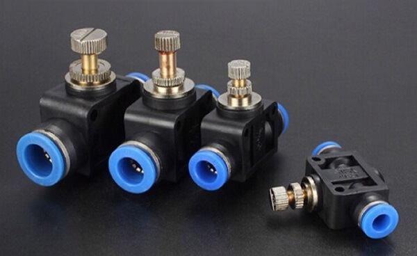
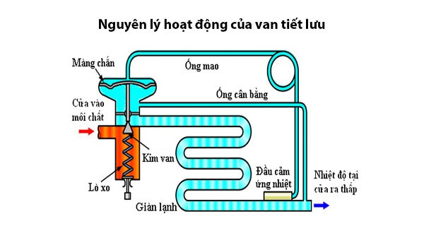
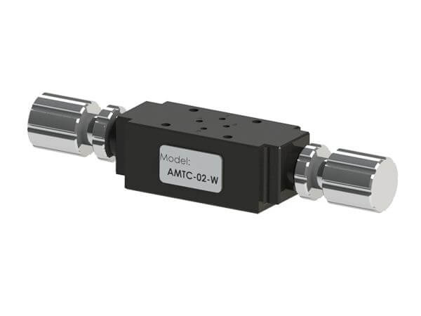
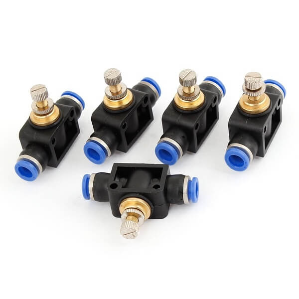
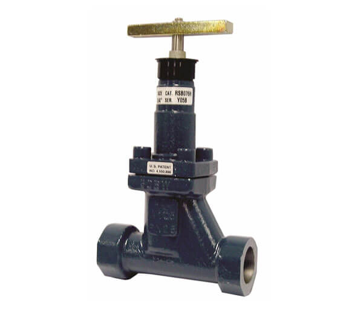
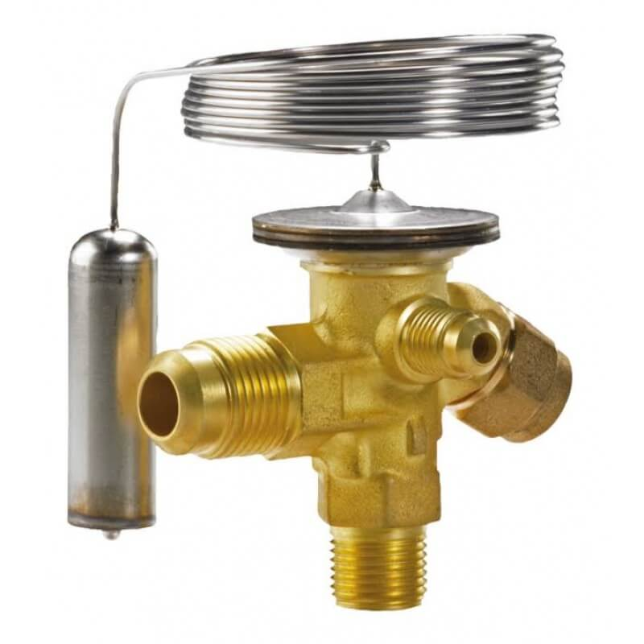
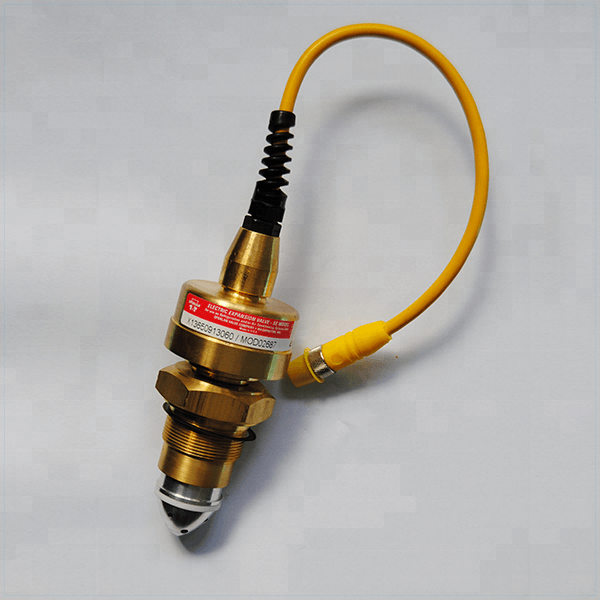
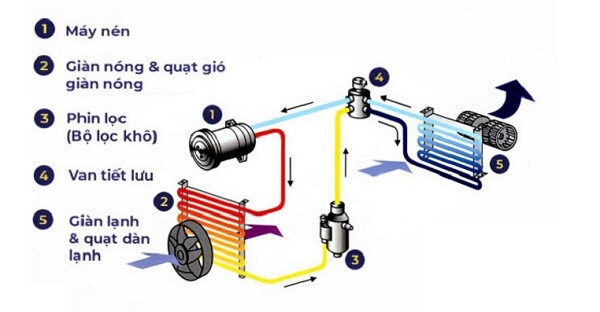

Van tiết lưu là gì? Cấu tạo – Nguyên lý hoạt động của van tiết lưu
Van tiết lưu chắc hẳn không còn xa lạ với những nhân viên, chuyên viên kỹ thuật. Đây là loại phụ kiện được sử dụng trong nhiều loại máy móc, thiết bị như: máy phun xịt áp lực cao, máy nén khí, máy điều hòa, hệ thống điều hòa ô tô,… Vậy van tiết lưu là gì? Cấu tạo và nguyên lý hoạt động của van tiết lưu ra sao? Ứng dụng thực tế của sản phẩm này như thế nào? Cùng chúng tôi tìm hiểu mọi thông tin liên quan đến loại phụ kiện đặc biệt này nhé!

Van tiết lưu là gì?
Van tiết lưu là thuật ngữ dùng để chỉ loại van có chức năng điều chỉnh lưu lượng dung môi, chất lỏng trong các hệ thống máy móc, thiết bị công nghiệp. Mỗi loại van tiết lưu khác nhau sẽ có những ứng dụng phù hợp trong các lĩnh vực, đóng vai trò quan trọng trong các loại máy móc: hệ thống điều hòa, máy nén khí, máy rửa xe áp lực cao, hệ thống thủy lực, máy ép,…
Cấu tạo van tiết lưu
Cấu trúc của van tiết lưu bao gồm nhiều bộ phận khác nhau, mỗi bộ phận đóng vai trò quan trọng trong việc điều chỉnh và điều hòa hệ thống, bao gồm:
- Bầu cảm biến nhiệt: Điều chỉnh hệ thống theo nhu cầu sử dụng của người dùng.
- Ống mao: Chuyển đổi chất lỏng thành hơi và điều chỉnh lưu lượng gas.
- Màng xếp: Ngăn không cho chất lỏng hoặc khí thoát ra bên ngoài và điều chỉnh lưu lượng khi van mở.
- Kim phun: Thổi hơi mát trực tiếp ra bên ngoài.
- Tiết lưu vào dàn lạnh là: Điều chỉnh tốc độ và nhiệt độ làm việc của van.
- Nắp chụp: Ngăn hơi lạnh thoát ra ngoài trong quá trình làm lạnh.
- Vít điều chỉnh: Điều chỉnh mức áp suất làm việc lý tưởng của van.
- Lò xo van: Tạo áp lực đẩy khí đến vị trí đầu van.
- Dịch từ bình chứa cao áp vào: Chứa áp suất chuyển đổi sang áp suất phù hợp.
- Phin lọc: Lọc sạch chất lỏng trước khi chuyển hóa sang dạng khí.
- Ty van: Đảm bảo chức năng điều khiển quá trình đóng/mở của van một cách linh hoạt.
- Màng ngăn: Ngăn không cho hơi thoát ra ngoài.
Nguyên lý hoạt động của van tiết lưu hiện nay
Như đã đề cập ở trên, van tiết lưu hiện có rất nhiều chủng loại khác nhau. Mỗi loại sẽ được cấu tạo và đặc điểm riêng biệt. Tuy nhiên, nhìn chung, các loại van này đều hoạt động theo nguyên lý chung như sau: Khi dung môi, chất lỏng đi qua van được lắp trên đường ống, sự ma sát mạnh sẽ làm áp suất dòng chảy giảm xuống và sinh ra các dòng xoáy. Áp suất sẽ có sự chênh lệch tùy thuộc vào bản chất, trạng thái dung môi cũng như độ hẹp của ống dẫn và tốc độ dòng chảy.

Theo nguyên lý hoạt động, người ta còn chia van điều tiết lưu lượng thành 2 loại với nguyên lý vận hành khác nhau:
- Van tiết lưu chảy tầng: Khi dung môi chảy qua đường ống có kích thước l/d>10 thì dòng chảy của dung môi đang ở chế độ chảy tầng. Theo đó, dung môi sẽ đi theo các rãnh xoắn. Số vòng xoắn và tiết diện rãnh sẽ ảnh hưởng trực tiếp đến giá trị tụt áp suất theo yêu cầu. Có thể tăng giảm số vòng xoắn nhờ vít vặn để thay đổi chiều dài rãnh xoắn.
- Van tiết lưu chảy rối: loại van này hoạt động theo nguyên lý rút ngắn chiều dài van. Nhờ thế, sự tụt áp và lưu lượng sẽ không làm hao phí áp lực đồng thời không phụ thuộc vào nhiệt độ cũng như trạng thái dung môi. Van hoạt động ổn định hơn so với chế độ chảy tầng.
Phân loại và cấu tạo từng loại van tiết lưu
Trên thị trường hiện nay có rất nhiều loại van điều tiết lưu lượng. Mỗi loại sẽ có cấu tạo và đặc tính riêng biệt, đáp ứng cho nhu cầu sử dụng đa dạng của thị trường.
Van tiết lưu thủy lực
Van tiết lưu thủy lực là gì? – Van tiết lưu thủy lực (hay van tiết lưu 1 chiều) là loại van điều tiết lưu lượng nước, có khả năng điều chỉnh dòng chảy theo 1 chiều nhất định (không thể điều chỉnh theo chiều ngược lại).

Cấu tạo van điều tiết lưu lượng thủy lực gồm các bộ phận cơ bản:
- 2 cuộn dây
- Ống đàn hồi
- Nam châm vĩnh cửu
- Miệng phun dầu
- Càng đàn hồi.
Loại van này hoạt động dựa vào lưu lượng dòng chảy đi qua và sự thay đổi của tiết diện. Nếu tiết diện càng nhỏ thì sự chênh lệch áp suất càng lớn, lưu lượng điều tiết qua van cũng nhỏ dần.
Van tiết lưu khí nén
Vạn tiết lưu khí nén hay còn gọi là van tiết lưu 2 chiều là loại van điều tiết giúp làm giảm tốc độ của dòng chảy khí nén trong mạch của máy nén khí. Các loại van khí nén phổ biến hiện nay gồm:
- Van có tiết diện không thay đổi được: Lưu lượng dòng chảy khí nén đi qua khe hở sẽ không đổi.
- Van có tiết diện thay đổi được: Lưu lượng khí nén qua khe có thể thay đổi sao cho phù hợp với nhu cầu sử dụng. Dòng chảy khí nén có thể được điều chỉnh đi theo 2 chiều.
- Van tiết lưu điều chỉnh bằng tay: là loại van có thể để điều chỉnh vít bằng tay nhằm thay đổi tiết diện chảy của dòng khí nén.

Van tiết lưu tay
Van điều tiết khí nén bằng tay có cấu tạo đơn giản gồm các bộ phận: thân van, cửa khí vào – ra, màng chắn, vít vặn, chốt chắn. Mọi thành phần cấu tạo van tiết lưu tay đều được kết nối chặt chẽ với nhau.

Kích thước của loại van này khá nhỏ, chiều dài van từ 0.4 – 0.8mm, tiết diện từ 0.4 – 0.5mm. Van điều tiết lưu lượng tay thường được sử dụng trong các hệ thống máy móc quy mô nhỏ.
Van tiết lưu nhiệt
Van tiết lưu nhiệt là loại van hoạt động dựa vào sự thay đổi của nhiệt độ tại điểm đo, từ đó thay đổi lưu lượng thể tích đi qua van.

Có 2 loại van tiết lưu nhiệt:
- Van tiết lưu cân bằng trong
- Van tiết lưu cân bằng ngoài
Van tiết lưu điện tử
Van tiết lưu điện tử hoạt động dựa vào một hoặc nhiều tín hiệu đo được trong các hệ thống tại 1 hoặc nhiều vị trí cụ thể. Khi tín hiệu phát ra, van sẽ điều chỉnh lưu lượng thể tích dòng chảy qua van.

Cấu tạo van tiết lưu điện tử gồm các bộ phận:
- Màng giãn nở
- Thanh van
- Lò xo điều chỉnh
- Vít điều chỉnh
- Bộ điều khiển
- Sụn cân bằng áp suất
- Đường chỉnh van
- Đề van
- Kim van.
Ứng dụng nổi bật của van tiết lưu
Van điều tiết lưu lượng là loại van không thể thiếu trong hệ thống máy móc, thiết bị công nghiệp. Với nhiều đặc tính nổi bật, sản phẩm hiện đang được ứng dụng phổ biến trong nhiều lĩnh vực khác nhau. Có thể kể đến những ứng dụng nổi bật nhất dưới đây:
Van tiết lưu điều hòa trong hệ thống máy lạnh
Van tiết lưu điều hòa là loại van đóng vai trò cực kỳ quan trọng trong hệ thống làm lạnh của máy điều hòa. Tại đây, van điều tiết lưu lượng thực hiện chức năng chuyển gas từ trạng thái lỏng, nhiệt độ trung bình sang trạng thái khí, nhiệt độ rất lạnh. Nhờ vậy, giúp thiết bị máy lạnh, máy điều hòa tạo ra luồng khí mát ở nhiệt độ điều chỉnh nhất định.

Van tiết lưu điều hòa ô tô
Van tiết lưu điều hòa ô tô là bộ phận nằm trong hệ thống điều hòa xe ô tô. Loại van này đóng vai trò rất quan trọng, nếu nó gặp vấn đề thì sẽ làm ảnh hưởng đến toàn bộ hệ thống lạnh của xe. Chức năng của van tiết lưu ô tô là điều tiết môi chất lạnh ở dạng lỏng, nhiệt độ cao sang dạng hơi, nhiệt độ thấp, áp suất thấp. Ngoài ra, van tiết lưu còn điều chỉnh được lượng môi chất lạnh phun vào dàn lạnh ô tô dựa vào nhiệt độ trong xe.
Van tiết lưu máy phun xịt áp lực cao
Máy phun xịt áp lực cao không thể thiếu được phụ kiện quan trọng là van tiết lưu. Cụ thể, van tiết lưu máy rửa xe có chức năng điều chỉnh lưu lượng nước trong thiết bị để từ đó tăng giảm tốc độ bộ truyền động. Nhờ vậy mà thiết bị phun xịt rửa xe cao áp vận hành ổn định, mang lại hiệu quả làm sạch cao.
Van tiết lưu dùng trong máy phun xịt áp lực cao thường là loại ống tiết lưu kích thước nhỏ, được chế tạo từ chất liệu đồng hoặc hợp kim đồng.
Các dấu hiệu nhận biết van tiết lưu bị hỏng và cách khắc phục
Các dấu hiệu để nhận biết:
Nếu máy lạnh của bạn bắt đầu xuất hiện các dấu hiệu sau đây, đó có thể là dấu hiệu của sự nghẹt của van tiết lưu và cần phải được khắc phục ngay lập tức để tránh ảnh hưởng đến hiệu suất và tuổi thọ của máy lạnh:
- Máy lạnh không tạo ra không khí lạnh hoặc hiệu suất làm lạnh yếu.
- Nước chảy từ máy lạnh ở dàn lạnh.
- Có tuyết hoặc bám trên dàn lạnh hoặc trên ống đồng của máy.
- Máy lạnh hoạt động không ổn định, có thể chạy và dừng liên tục.
- Quạt gió ở dàn nóng sẽ không hoạt động.
- Dòng chảy và áp suất đầu đẩy tăng.
Cách để giải quyết vấn đề:
Trong trường hợp van tiết lưu bị nghẹt, bạn cần kiểm tra và xác định nguyên nhân cụ thể để thực hiện các biện pháp khắc phục thích hợp. Thường thì, phương pháp phổ biến và nhanh nhất là thay thế van tiết lưu mới, vì khi van đã bị nghẹt thì khó có thể khôi phục hoàn toàn.
Những thói quen để sử dụng điều hòa ít hư hỏng
Để bảo vệ cả van tiết lưu và các bộ phận khác của máy lạnh, bạn nên áp dụng một số thói quen sử dụng hợp lý như sau:
- Thực hiện vệ sinh máy lạnh định kỳ, tối thiểu mỗi 3 tháng một lần, để loại bỏ bụi bẩn, rỉ sét, cặn bẩn, vi khuẩn và nấm mốc, từ đó ngăn chặn tình trạng nghẹt van và bảo vệ sức khỏe.
- Không để máy lạnh hoạt động liên tục quá lâu, nên nghỉ ít nhất 15 phút sau mỗi 4 tiếng hoạt động để tránh quá tải, nhiệt độ cao, lãng phí khí lạnh, gây hỏng van và máy nén.
- Điều chỉnh nhiệt độ máy phù hợp với nhu cầu và điều kiện thời tiết, tránh đặt quá cao hoặc quá thấp để ngăn chặn tình trạng đóng băng hoặc nóng chảy, đảm bảo hoạt động ổn định của van và máy lạnh.
- Kiểm tra và bảo dưỡng van thường xuyên, ít nhất mỗi 6 tháng một lần, để phát hiện và khắc phục kịp thời các sự cố như hỏng hoặc nghẹt, từ đó duy trì hiệu suất và tuổi thọ của máy lạnh.
Lưu ý khi sử dụng van tiết lưu
Dưới đây là một vài lưu ý khi sử dụng van tiết lưu:
- Chọn loại van tiết lưu phù hợp với từng loại máy móc, thiết bị.
- Không nên vận hành thiết bị liên tục quá nhiều giờ để đảm bảo tuổi thọ van tiết lưu cũng như các linh kiện máy khác.
- Khi không sử dụng đến, cần vệ sinh van sạch sẽ và bảo quản cẩn thận. Đặc biệt không để van tiết lưu dính nước để tránh bị hoen gỉ.
- Kiểm tra thường xuyên để phát hiện sự cố và xử lý kịp thời.
- Dầu tra máy cần đảm bảo không bị cặn, bị bẩn.
Trên đây ICD CLEANING MACHINE đã tổng hợp những thông tin xoay quanh van tiết lưu – phụ kiện đóng vai trò quan trọng trong nhiều thiết bị, máy móc công nghiệp. Hy vọng qua đây bạn đã nắm rõ Van tiết lưu là gì? Cấu tạo và nguyên lý hoạt động của van tiết lưu cũng như những ứng dụng phổ biến nhất của loại phụ kiện này.
 Tư vấn cách chọn lựa máy chà sàn nhà gia đình
Tư vấn cách chọn lựa máy chà sàn nhà gia đình Có nên mua máy hút bụi công nghiệp cho gia đình?
Có nên mua máy hút bụi công nghiệp cho gia đình? TOP 5 máy hút bụi công nghiệp 3000W bán chạy đáng đầu tư
TOP 5 máy hút bụi công nghiệp 3000W bán chạy đáng đầu tư